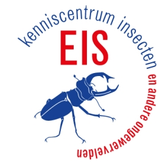
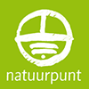

<!-- Footer -->
  <footer class="w3-bar w3-dark-grey w3-container w3-padding-64 w3-black w3-xlarge footer-container">

    <div style="max-width: 750px;margin-left: auto;margin-right: auto">

        <p class="w3-small" style="text-align: center">
          <text>sourceLine1</text><br />
          <text>sourceLine2</text>
        </p>

        <div class="links-block">

          <p class="w3-small">
            <a id="guiDocLink" href="doc.html"><text>guiDocItem</text></a><br />
            <a id="apiDocLink" href="api.html"><text>apiDocItem</text></a><br />
            <a id="taxonLink" href="" target="_blank"><text>taxonDocItem</text></a><br />
            <a href="mnailto:identify@naturalis.nl"><text>contactItem</text></a>
          </p>

        </div>

        <div class="links-block">

          <p class="w3-small">
            <b><text>initiativeHeader</text></b><br />
            <table><tr>
              <td>
                <a href="https://www.naturalis.nl/" target="_blank"></a>
                <p class="w3-small"><a class="logo-link" href="https://www.naturalis.nl/" target="_blank">Naturalis</a></p></td>
              <td>
                <a href="https://cosmonio.com/" target="_blank"></a>
                <p class="w3-small"><a class="logo-link" href="https://cosmonio.com/" target="_blank">COSMONiO</a></p></td>
              <td>
                <a href="https://waarneming.nl/" target="_blank"></a>
                <p class="w3-small"><a class="logo-link" href="https://waarneming.nl/" target="_blank">Observation.org</a></p></td>
            </tr></table>
          </p>

        </div>

        <div class="links-block">

          <p class="w3-small">
            <b><text>cooperationHeader</text></b><br />
            <table><tr>
            <td>
                <a href="https://www.eis-nederland.nl/" target="_blank"></a>
                <p class="w3-small"><a class="logo-link" href="https://www.eis-nederland.nl/" target="_blank">EIS Nederland</a></p></td>
              <td>
                <a href="https://www.natuurpunt.be/" target="_blank"></a>
                <p class="w3-small"><a class="logo-link" href="https://www.natuurpunt.be/" target="_blank">Natuurpunt</a></p></td>
            </tr></table>
          </p>

        </div>

    </div>

</footer>


<script>

$(document).ready(function()
{
  $("#taxonLink").attr("href",taxonIdentUrl.replace('/auth',''));
})

</script>